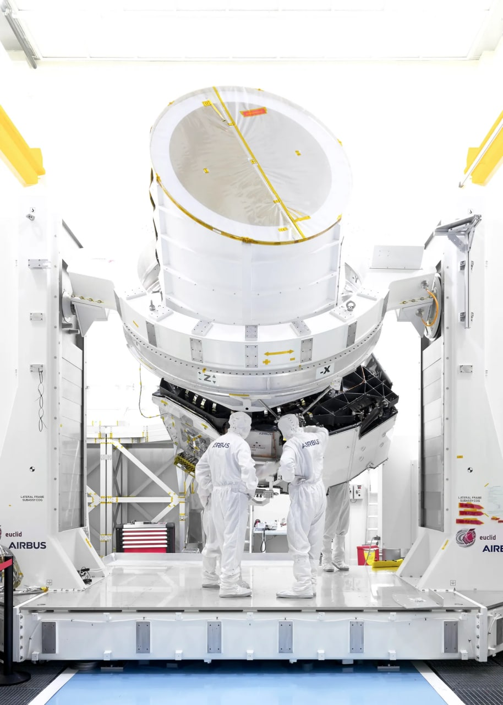
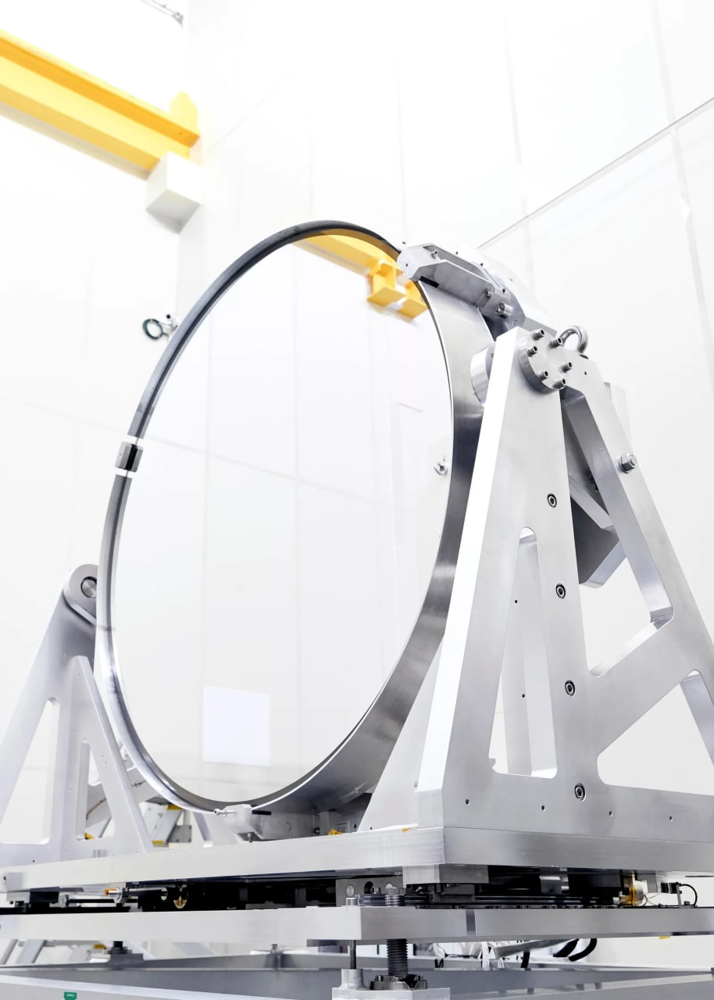
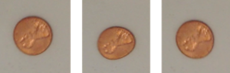

معرفی تلسکوپ فضایی اقلیدس، کاوشگر ماده و انرژی تاریک
تلسکوپ فضایی اقلیدس محصول آژانس فضایی اروپا و کنسرسیوم اقلیدس قرار است در اواخر سال ۱۴۰۱ به مدار لاگرانژی ۲ پرتاب و در همسایگی جیمز وب در مداری مستقر شود. هدف از ساخت این تلکسوپ نقشهبرداری از بخش تاریک کیهان به کمک جمعآوری کلانداده است. مأموریتهای اقلیدس شامل بررسی علت شتابگیری انبساط کیهان، تلاش برای شناخت عامل انبساط - موسوم به انرژی تاریک، تهیه نقشهای از ماده تاریک به همراه درک چگونگی شکلگیری ساختارهای کیهانی است. بدین منظور به رصد نوسانهای ماده باریونی، انحراف در سرخگرایی و اعوجاجات ظاهری در شکل کهکشهانها (مورفومتری) ناشی از اثر عدسی گرانشی ضعیف خواهد پرداخت [۱]. این تلسکوپ از نظر میزان هزینه با سقف بودجه ۵۰۰ میلیون دلار یک پروژه متوسط محسوب میشود.

مشخصات فیزیکی
تلکسوپ فضایی اقلیدس که فرآیند طراحی و ساخت آن از سال ۲۰۱۳ آغاز شده، همانند جیمز وب از سه آینه بهره میبرد. آینه اصلی آن یکپارجه با قطر ۱۲۰ سانتیمتر و دارای فاصله کانونی ۲۴.۵ متر با بستری از جنس سیلیکون کاربید و پوشش نقره برای رصد فروسرخ نزدیک و بخش مرئی طیف الکترومغناطیس است (طول موجهای بین ۵۵۰ تا ۲۰۰۰ نانومتر). سیلیکون کاربید (SiC) ترکیبی مستحکم است که تغییرات اندازه ناچیزی با دما دارد، این ویژگیها آن را برای بکارگیری در آینه تلکسوپ فضایی به مادهای مناسب تبدیل میکند [۵]. هر چند آینه اقلیدس در مقایسه با همتایان خود کوچکتر و تبعاً توانایی نورگیری و کیفیت تصاویر آن نیز نسبت به هابل کمتر است، با این وجود، شیوه بهرهبرداری متفاوت از آن در قیاس با پروژههای قبلی سبب میشود بتواند شناخت ما را از کیهان دگرگون سازد. ابزارهای اپتیکی تلکسوپ در دمای حدود منفی ۱۹۰ درجه سلسیوس کار میکنند که به لطف یک سایهبان مستطیلی شکل با پوششی طلایی رنگ از جنس مایلار و کپتون میسر خواهد شد [۶]. این تلکسوپ نیز همانند جیمز وب در لاگرانژی ۲ مستقر در یک مدار لیساژو گردش خواهد کرد. طول عمر ۶ سال برای آن در نظر گفته شده است. طبق آخرین گزارشها قرار است با راکت سایوز روسی یا آریان ۶ (جایگزین آریان ۵) از گویان فرانسه پرتاب شود، البته آریان ۶ همچنان در دست توسعه است.

شیوه بهرهبرداری
اقلیدس قرار است با گردآوری کلانداده به حل معمای انرژی و ماده تاریک کمک کند. این دادهها علاوه بر حجم زیاد، دارای پیچیدگی بالایی نیز خواهند بود. وجود جرم فارغ از آنکه باریونی یا ماده تاریک باشد، سبب خمش فضا و زمان پیرامون خود میشود. میتوان این اثر را با مشاهده تغییر شکل ظاهری کهکشهانها اندازه گرفت. حوضچهای مملو از آب را تصور کنید، که تعدادی سکه در کف آن دارد. سکهها دایرهای هستند، در آب آرام، ناظر آنها را متقارن میبیند. اما هنگامی که سطح آب مواج باشد، شکل ظاهری آنها به دلیل اعوجاجات محیط تغییر میکند. این مثالی ساده شده برای تقریب به ذهن اثر گرانش بر شکل کهکشانها بود. ماده تاریک سبب تغییر ظاهر کهکشهانهای موجود در زمینه در مسیر خط دید میشود. میتوان با عکسبرداری از میلیاردها کهکشان و رصد تغییر شکل ظاهری آنها، وجود ماده تاریک را شناسایی و نقشهای از آن تهیه کرد. اقلیدس قرار است تعداد تصاویری که هابل طی ۲۵ سال جمع کرد را در مدت چند روز بگیرد [۳].

اقلیدس روزانه از دهها هزار کهکشان عکس خواهد گرفت و این یعنی ارسال چند ۱۰۰ گیگابایت داده در روز، در نهایت پس از پایان مأموریت شش ساله خود این رقم به دو میلیارد کهکشان خواهد رسید. تاکنون از هیج تلسکوپی برای عکسبرداری از این تعداد جرم دوردست بهره گرفته نشده است. به کمک این شمار خیرهکننده از تصاویر، امکان تهیه نقشهای سه بعدی از توزیع ماده تاریک تا حدود ده میلیارد سال قبل فراهم میشود. همچنین محققان با در اختیار داشتن تصویری سه بعدی از عالم، قادر به اندازهگیری انبساط شتابان کیهان - که عامل آن انرژی تاریک است - با دقت پنج تا ده برابر بهتر هستند [۶].
مأموریت مشابه بعدی
تلسکوپ نانسی گ. رومن، که اکنون توسط ناسا در دست ساخت است، با هدفی مشابه اقلیدس قرار است تا پیش از سال ۲۰۳۰ پرتاب شود، با این تفاوت که رومن در بخش فروسرخ طیف به رصد خواهد پرداخت و دارای آینهای به قطر ۲۴۰ سانتیمتر و دو برابر اقلیدس است. با توجه به زمان پرتاب آن، امکان تغییر مشخصات تلسکوپ در صورتی که اقلیدس با معمای تازهای مواجه شود وجود دارد [۲]. نانسی گریس رومن یک منجم مطرح آمریکایی و نخستین مدیر اجرایی زن در ناسا بود، وی ریاست بخش نجوم ناسا در دهه ۶۰ و ۷۰ میلادی را بر عهده داشت [۷].